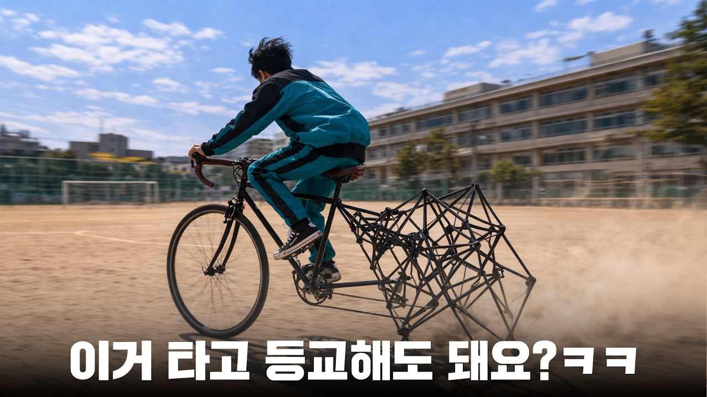
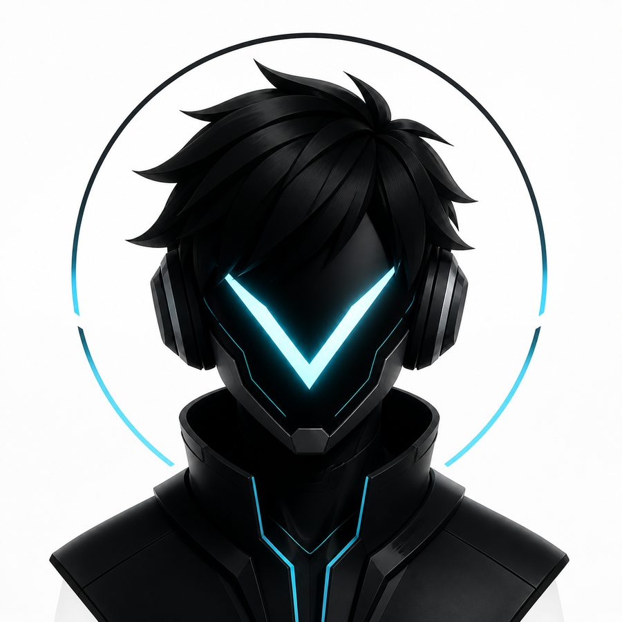
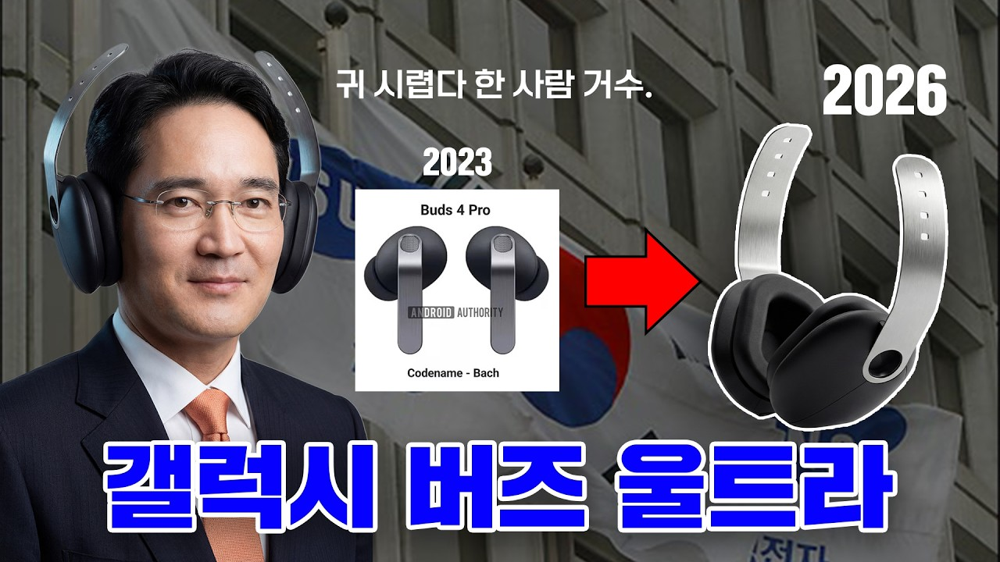
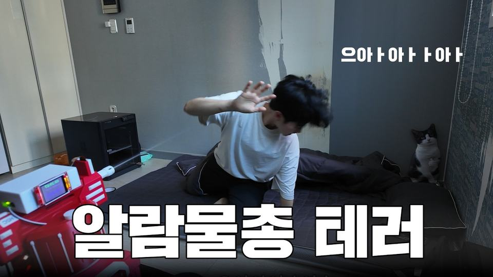
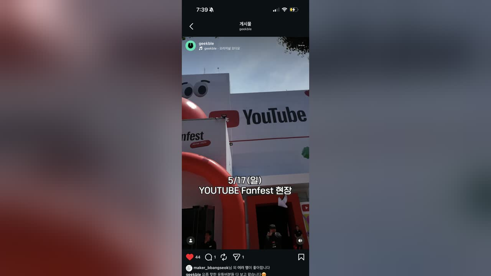
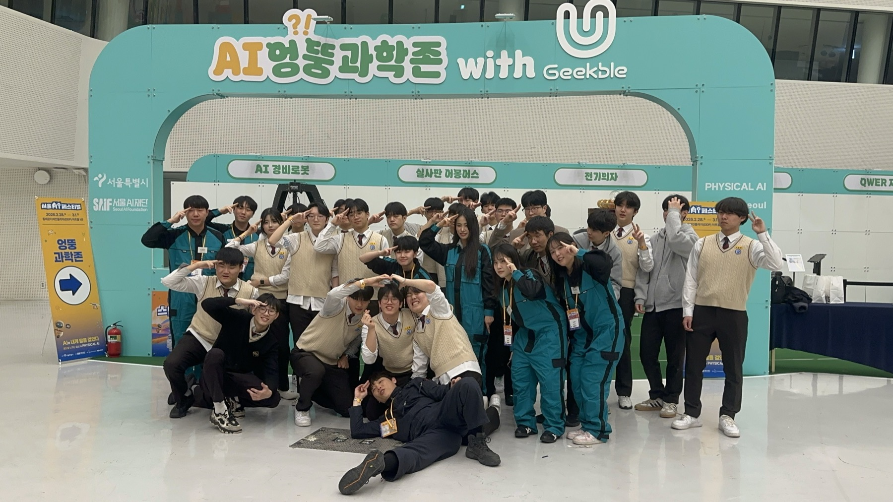
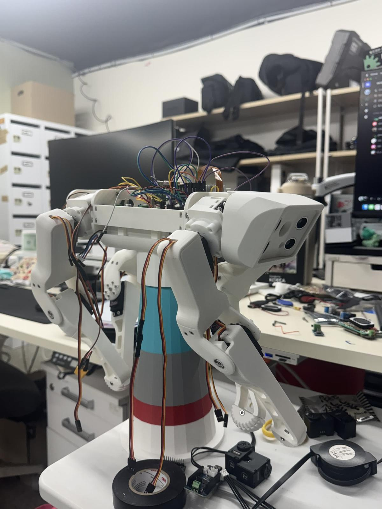

Longform · 2026.04.25
안센 자전거 JLCPCB
촬영 기획과 제작 흐름을 조율하며 하드웨어 프로젝트를 콘텐츠로 정리했습니다.
Watch on YouTubeGeekble Maker · Physical AI · Production
AI와 하드웨어를 실제로 움직이는 장면으로 만들고, 제작 과정을 콘텐츠로 정리하는 메이커 Vector입니다.

2025.12 - 진행형
6개월 활동
게임 제작, 하드웨어, 제품 콘텐츠
Published Work

Longform · 2026.04.25
촬영 기획과 제작 흐름을 조율하며 하드웨어 프로젝트를 콘텐츠로 정리했습니다.
Watch on YouTube
Hardware · Production
제품 리뷰를 제작형 콘텐츠 흐름으로 풀어내며 촬영 구조와 후반 편집 포인트를 함께 설계했습니다.
Watch on YouTube
Review · Production
AI 판단과 물리 장치를 결합한 알람 프로젝트의 제작, 촬영, 공개 콘텐츠 흐름에 참여했습니다.
Watch on YouTubeReel · 2026.05.28
피지컬 AI와 패션쇼 포맷이 만나는 현장형 콘텐츠를 기록했습니다.
View on Instagram
Reel · 2026.05.17
행사 현장의 에너지와 크리에이터 문화를 짧은 릴 콘텐츠로 정리했습니다.
View on Instagram
Event · 2026.02.28
미래산업과학고등학교 학생들과 협업해 PDF 자료에 정리된 콘텐츠를 전시하고 홍보했습니다. 과학과 메이킹에 대한 호기심을 불러일으키는 체험형 존 운영을 함께 매니징했습니다.
Seoul AI FestivalShorts
Project Notes
2026년 2분기에는 안센 자전거 JLCPCB, 갤럭시 버즈 울트라 컨텐츠, Bambu Lab H2C, 밥독 2, Google Gemini 게임 만들기, Google for Korea 쇼츠 등 다양한 제작형 콘텐츠에 참여했습니다. 제6의 손가락, AI 수어 통역기처럼 기획 단계에서 출발한 프로젝트도 함께 다루며 하드웨어 제작, 촬영 기획, 콘텐츠 구성 전반을 폭넓게 경험했습니다.
프로젝트마다 제작 난이도와 촬영 방식이 달랐기 때문에, 단순히 한 가지 역할만 수행하기보다 상황에 맞춰 메이킹 진행, 촬영 흐름 조율, 편집 가능한 장면 구성, 자료 정리와 일정 관리까지 함께 맡았습니다. 실제 구현 과정이 영상 안에서 자연스럽게 보일 수 있도록 촬영 포인트를 잡고, 제작자의 작업 흐름이 콘텐츠 구조로 이어지도록 연결하는 데 집중했습니다.
특히 안센 자전거 프로젝트에서는 개발 과정과 촬영 기획을 가까이에서 조율하며 제작형 콘텐츠의 전체 흐름을 배웠고, 이 경험은 이후 갤럭시 버즈 울트라 컨텐츠와 밥독 2 프로젝트를 더 효율적으로 진행하는 기반이 되었습니다. 다음 작업에서는 협업 일정, 광고주 피드백, 후반 편집 시간을 초반 계획에 더 세밀하게 포함해 완성도와 발행 안정성을 함께 높이고자 합니다.
Upcoming
아침마다 물총 테러를 하는 AI 알람 물총을 만들었습니다. 이 프로젝트는 잠에서 확실히 깨우는 알람을 목표로, AI 판단과 물리 장치를 결합한 제작형 콘텐츠입니다.
2026.06.16 발행 예정Personal Work
개인 작업으로 사족보행 로봇 SpotMicro를 제작하고 있습니다. 하드웨어 조립, 구동 구조, 피지컬 AI 실험까지 이어가는 장기 메이킹 프로젝트입니다.

Recently Updated
제작 중인 SpotMicro의 진행 상황을 기록한 업데이트 릴입니다.
View on InstagramAbout Vector
Fusion 360, 3D 프린팅, Arduino/ESP32, 센서와 액추에이터를 활용해 아이디어를 실제 장치로 만듭니다.
촬영 가능한 기획으로 아이디어를 정리하고, 제작 일정과 콘텐츠 흐름을 현실적인 단위로 쪼갭니다.
AI가 화면 안에만 머물지 않고 센서, 모터, 카메라, 소리와 연결되는 프로젝트를 실험합니다.
Contact